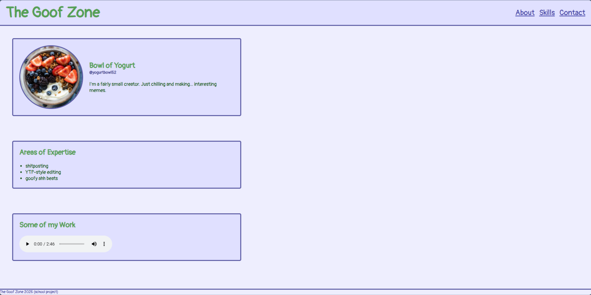

How to do Drums

If you’re starting to make music, the easiest thing to learn is drum patterns. Of course, it isn’t as easy as slapping some notes into the pattern and calling it a day, but just about anyone can do it. In this post, I will share some of my knowledge of drum patterns.
Uploaded 3/??/2026